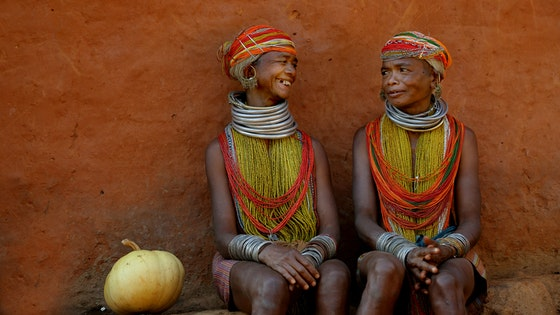

About Myanmar
Before introducing myself, I would like to introduce about my country, Myanmar which is one of the Southeast Asia countries. My country is bordered Bangladesh and India to its northwest, China to northeast, Laos and Thailand to its east and southeast, and the Andaman Sea and the Bay of Bengal to its south and southwest. The country’s capital city is Naypyidaw, and its largest city is Yangon(Rangoon).
Our country’s area is 676,578 km2 and the population is 53,582,855. Most of the people are Buddhism and there are also Christianity and Islam. I would like to show the most famous places in our country.

About me
I am Mr. Wai Yan Kyaw and I live in Yangon with my family. I have four members of family. My father is Mr. Kyaw Kyaw Oo who is a trader and my mother is Mrs. Tin Tin Than who is a teacher and my younger brother is Mr. Hlyan Htet Kyaw who is a third year student of computer science in Myanmar.In my leisure time, I like reading, watching movies and learning new technology.
Education
Now I am studying a master degree of Telecommunications in Riga Technical UniversityI have graduated in Computer Technology(B.C.Tech) specialized in Communication and Networking Systems from University of Information Technology in Myanmar. After finishing a bachelor degree, I wanted to study a master degree abroad. That is why I chose to study a master program in Riga Technical University.